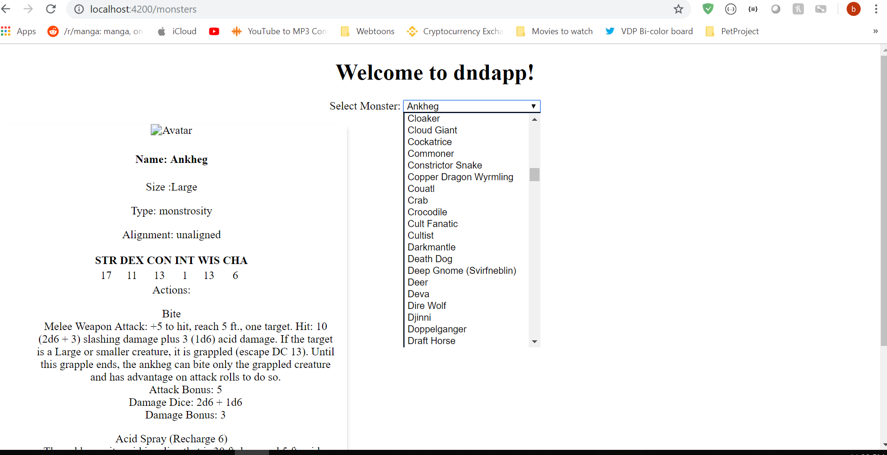

Progress on D&D App
Post #3
It's up now on Github click here! Woooooo.
So far so good, I made modules for characters and monsters and I think I'm making decent progress so far since I started 10 days ago. Balancing this and studying Leetcode problems and work was not fun.
For characters, I hardcoded some character objects and made a table of characters on the html template (for the character component) The table is supposed to represent a list of characters that a specific user has created. I also added a filter bar as well so that a user can look up a specific character faster by typing in a specific attribute. The characters are hard coded right now, so eventually I would like for everything (users and their list of characters ) to be stored in a database that is accessed by Web API (that I'll have to code up later once I'm satisied with my progress on the monster component)
The monsters component was where most of my time went into. I'm currently leveraging this D&D API called Open5e. I like it alot, whoever made it has done a really good job. So far, I slaped on a dropdown selection list onto the component, which is then populated by the name of the monsters the I got from the Open5e API. Then whatever name the user choosed from the list is then bind to the "selectedMonster" from my "monster-info" component so that the component can create a card filled with the selected monster's info onto the screen.
The most annoying part was dealing with the paged API. You see, the list of monsters on the Open5e API are split up into 7 pages. This means that I would have to call it 7 times (because there are 7 pages) and concatenate the result into one array. This sounds pretty simple but don't forget that these calls are asynchronous, so it's not like I can just throw it in a loop because of how Observables work (as the responds won't come back at the same time). This post is already pretty long so I'll go into more detail in my next post.